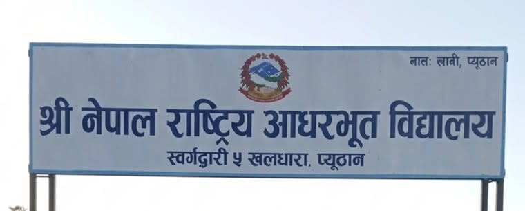

Admission Open 2026
Admission process has started.


श्री नेपाल राष्ट्रिय निम्न माध्यमिक विद्यालय मा यहाँहरूलाई हार्दिक स्वागत गर्दछौँ। हाम्रो विद्यालय स्वर्गद्वारी नगरपालिका–५, खलधारा, प्यूठानमा अवस्थित एक शैक्षिक संस्था हो, जसले विद्यार्थीहरूलाई गुणस्तरीय, व्यवहारिक तथा नैतिक शिक्षाको माध्यमबाट सक्षम र जिम्मेवार नागरिक निर्माण गर्ने लक्ष्य राखेको छ। हामी विद्यार्थीहरूको ज्ञान, सीप, अनुशासन र सिर्जनात्मक क्षमताको विकासमा विश्वास गर्दछौँ। अनुभवी शिक्षकहरूको मार्गदर्शन, अभिभावकहरूको सहयोग र विद्यार्थीहरूको सक्रिय सहभागिताबाट विद्यालयले निरन्तर प्रगतिको यात्रा अगाडि बढाइरहेको छ। “गुणस्तरीय शिक्षा, उज्ज्वल भविष्य” भन्ने उद्देश्यका साथ हामी प्रत्येक विद्यार्थीलाई सुरक्षित, सकारात्मक र प्रेरणादायी सिकाइ वातावरण प्रदान गर्न प्रतिबद्ध छौँ।
Apply NowAdmission process has started.
Final examination routine published.
Date: 15 August 2026
Students
Qualified Teachers
Years Experience